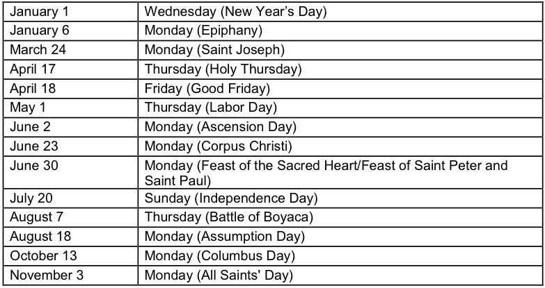

Colombia, in terms of natural and human resources, offers a strategic location, an educated workforce, and a well-developed industrial capacity. There is a lively international business community in Colombia, with hundreds of well-known, established companies that are committed to a long- term presence. Most companies know their risk profiles and take appropriate measures. It is expensive to do business in Colombia, relative to other Latin American countries. The cost of doing business in Cartagena and Bogota reflect costs similar to major U.S. and European cities. The Santos government is continuing the previous administration’s commitment to improve the country’s infrastructure (ports, roads, and communications) as a means of promoting a modern business environment and lowering operating costs.
Most business visitors tend to remain within the city limits of the major urban areas (Barranquilla, Bogota, Cali, Cartagena and Medellin). Those who venture beyond these limits (often to visit oilfields and mines) do so under controlled conditions. As with anything in business, the key is to be aware and prepared.
There are distinct regional differences in Colombia, not unlike the United States, Mexico, India or China. Coastal residents are more relaxed and open versus their inland counterparts. The Colombian private sector is well traveled and sophisticated. In all regions the business visitor will find serious, hardworking people who share many of the same work habits and ethics of business people in the United States.
Given the proximity of the two countries and the long-term presence of U.S. firms in the market, Colombians are used to doing business with the United States. Many of them have traveled or studied in the United States and have family members or friends there. Colombian executives and technicians, as well as government officials, travel frequently to the United States for meetings, conferences, trade fairs, training and tourism.
Working breakfasts and lunches at hotels and private clubs have become common practice in most Colombian cities. Business attire is the norm. Dinner meetings tend to be less formal. Business cocktails and official receptions are common events and are used as opportunities to make contacts and discuss ventures. Colombian trade
associations, government entities, and private firms are hosting an increasing number of national and regional conventions, conferences, and seminars in the country. These events present excellent opportunities for meeting Colombian business people and key government officials, as well as for assessing market potential.
So that travelers can make an informed decision, the State Department provides risk assessments related to on-going violence, dangers and unrest that could affect U.S. citizens in various countries around the world. There is currently a State Department travel warning in effect for U.S. citizens planning travel to Colombia. For the latest security information, Americans traveling abroad should regularly monitor the Department of State, Bureau of Consular Affairs’ website at http://travel.state.gov where the current Worldwide Caution Public Announcement, Travel Warnings and Public Announcements can be found.
On October 14, 2014, the State Department issued a travel warning for Colombia, due to sporadic violence that continues to affect various parts of the country, including but not limited to narco-terrorist group attacks, kidnappings, petty crime and similar threats which have affected U.S. citizens. The travel warning can be found at:http://travel.state.gov/content/passports/english/alertswarnings/colombia-travel-warning.html For more information on a particular business travel plan, companies are urged to contact the Commercial Service, U.S. Embassy, Bogota for customized advice.
Most business persons who visit Colombia travel primarily to the major cities and commercial centers of Bogota, Cali, Medellín, Barranquilla and Cartagena, where caution should be taken against common large-city crimes such as pick pocketing, jewelry and purse-snatching, and currency scams. Selecting a good hotel, keeping valuables in a hotel safe, using authorized taxis and hired car services, and using common sense in avoiding certain areas of town will help to reduce the risk of falling victim to these crimes. At airports, care should be taken with hand luggage and travel documents.
Travel between cities should be by air in order to avoid rural areas controlled by terrorist groups and common criminals. Road travel outside of the major cities is not recommended.
Those who absolutely must travel to facilities in outlying areas (most commonly oil and mining professionals and technicians) are advised to adhere strictly to the security regulations and guidelines established by their companies.
For further information concerning travel to Colombia, U.S. travelers should consult the Department of State's latest Travel Warning and the Country-Specific Information. In addition to information available on the Internet, up-to-date information on safety and security can also be obtained by calling 1- 888-407-4747 toll-free in the United States or Canada, or for overseas callers, a regular toll line at 1-202-501-4444. These numbers are available from 8:00 a.m. to 8:00 p.m. Eastern Time, Monday through Friday (except U.S. federal holidays).
U.S. citizens living in or visiting Colombia are encouraged to register and update their information online at: https://step.state.gov/step/. They can also obtain updated
information on travel and security in Colombia either at the Consular Section of the U.S. Embassy in Bogota or via the Embassy's website (http://bogota.usembassy.gov). The Consular Section is open for U.S. Citizens Services, including traveler registration, from 9:00 a.m. to 11:30 a.m., Monday through Thursday, (excluding U.S. and Colombian holidays), although it is important to note that most of these services require a prior appointment. For general inquiries or to speak with a consular officer, please send an email to acsbogota@state.gov. For passport appointments, please visit: http://bogota.usembassy.gov/passports.html.
The U.S. Embassy is located at Avenida El Dorado and Carrera 50. For U.S. citizens with an emergency please call 275-2000 or visit the Embassy. Internet website - http://bogota.usembassy.gov/.
The Consular Agency in Barranquilla provides limited consular services to U.S. citizens and is located at Calle 77B, No. 57-141, Piso 5, Centro Empresarial Las Americas, Barranquilla, Atlantico, Colombia; telephone (011-57-5) 353-2001; fax (011-57-5) 353-5216; e-mail: agrpersonal@gmail.com
U.S. Citizens (who are not also Colombian citizens) traveling to Colombia are required to carry a valid U.S. passport to enter and depart Colombia and a return/onward ticket. U.S. citizens do not need a visa for a tourist/business stay of 60 days or less. Stiff fines are imposed if passports are not stamped on arrival and/or if stays exceeding the authorized period of stay (generally 60-90 days) are not approved in advance by Colombian Immigration.
In an effort to encourage foreign investment and attract tourism, Colombian visas may be extended to periods ranging from six months to five years, depending on the visa category. Following are some examples:
Business Visas: These visas may be granted for a period of up to four years, with multiple entries, and for a maximum stay of up to two years per entry. Business visas are issued to foreigners who prove their status as merchants, industrialists, executives or business representatives.
Temporary Managerial Visas: Valid for multiple entries during a five year period. Holders of these visas may stay in the country for a period of up to one year per entry. It expires if the foreigner leaves the country for more than 180 days.
Special Temporary Visas: Valid for multiple entries during one year. It expires if the foreigner leaves the country for more than 180 Days.
For more information on other types of visas, or information concerning entry and customs requirements, immigration regulations, and other related matters, please visit Colombia’s Ministry of Foreign Affairs website (www.cancilleria.gov.co). Information is also available at the Colombian Embassy located at 2118 Leroy Place NW, Washington DC, 20008; Tel: (202) 387-8338 (www.colombiaemb.org). Additionally, Colombia has consular offices in the following U.S. cities: Atlanta, Boston, Chicago, Houston, Miami, Los Angeles, Newark, New York City, San Francisco, Orlando, Tampa and San Juan (Puerto Rico).
U.S. citizens whose passports are lost or stolen in Colombia must obtain a new passport from the U.S. Embassy and present it, together with a police report of the loss or theft, to the main immigration office in Bogota to obtain permission to depart.
According to Colombian law, any person born in Colombia must use his/her Colombian passport to enter and leave Colombia, even if also a citizen of another country. Therefore, Colombian-Americans must carry both a Colombian and U.S. passport while visiting Colombia.
While no arrival tax is collected upon entry into Colombia, travelers leaving by plane are required to pay an “exit tax” at the airport. Some airlines include all, or a portion, of this tax in the cost of your airline ticket. We recommended that you check with your airline prior to travel to determine if you will be required to pay the exit tax at the time of your departure from Colombia.
U.S. NON-INMIGRANT VISA REQUIREMENTS FOR COLOMBIANS
All Colombians traveling to or through the U.S. need a visa. U.S. companies inviting foreign business professionals to the United States should allow sufficient time [several months] for visa processing and issuance. Visa applicants should go to the following website http://colombia.usvisa-info.com/ or call (1) 325-9851 from within Colombia, and 1-703-439-2325 in the US or “usvisacolombia1” from Skype to schedule a visa appointment.
As of 2013, many individuals renewing business/tourist visas are no longer required to visit the U.S. Embassy for an interview. Visa applicants should visit http://colombia.usvisa-info.com to determine if they are eligible for this program.
No documents should be sent to the Embassy prior to the interview.
Visa applicants should go to the following links for additional information.
State Department Visa Website: http://travel.state.gov/visa/index.html
U.S. Embassy Bogota Colombia website: http://bogota.usembassy.gov
Appointment Website: http://colombia.usvisa-info.com
Colombia has a reliable domestic and international telecommunications system. Cellular phones are widely used in Colombia with automatic roaming within the country; there are also roaming agreements with U.S. carriers and most other Latin American countries.
Four private companies, Avantel, Claro, Movistar and Tigo, currently provide mobile services. Internet, tele-conferencing and video-conferencing facilities are also available.
Colombia boasts a very large number of mobile communications subscribers, with 48.6 million subscribers. In terms of services, approximately 81 percent are pre-paid users and 19 percent are contract subscribers. In terms of the supply of services, there is a
large concentration by carrier, with Claro boasting a 63 percent and 57 percent market share for pre-paid and contract services respectively. Movistar ranks 2nd in both segments, followed by Tigo and Une.
Colombia’s Government has made a major push to increase connectivity and access to telecommunications. In that regard, the Ministry of InformationTechnologies and Communications has launched a major program called ‘Vive Digital’, which is trying to increase the number of internet connections in the country, which as of year’s end 2013 stood at over 7.6 million for broadband and almost at 4 million for fixed and mobile connections.
Airports: Colombian air transportation is well developed, with international airports in Armenia, Bogotá, Barranquilla, Cartagena, Cali, Cucuta, Leticia, Pereira, Medellin, and San Andres Island providing regular flights to major cities abroad. Currently, there are five U.S. airlines (American, Delta, United, JetBlue, and Spirit) that provide direct daily flights between Colombia and the United States. Frequent domestic flights connect principal cities within Colombia. Business travelers should be aware that prior flight reservations within Colombia (even though pre-paid) are not always honored, and flights may be overbooked to popular destinations such as Cartagena. Thus, a final confirmation is advisable 24-hours before departure as is arriving at the airport three hours in advance of the flight. In January 2013 an Open Sky Agreement entered into effect between the United States and Colombia which has increased the flight frequencies among the two countries.
Taxis: Taxi service is available at all major hotels. Given traffic conditions and security concerns, business travelers should contract hourly taxi service or hired cars with drivers. Arrangements may be made with your hotel for your transportation. The current rate is about US$ 15.00 per hour or 30,000 COP. If normal yellow city taxis must be used, ensure the hotel/restaurant calls a “radio taxi” and provides you with a code. Never hail taxis on the street and never share a cab with an unknown person (including the driver's "brother, son, cousin, etc."). Taxis fares increase 30 percent after dark.
Spanish is the official language and spoken throughout the country. It is advisable to have some knowledge of Spanish or to hire the services of a qualified interpreter. Many senior executives and government officials speak English. Make the effort to translate your sales literature and website information into Spanish to improve your customer service.
Bogota is a high altitude location (8,600 ft). Travelers should take it easy the first day, avoid alcohol, eat moderately and stay hydrated. Medical care is adequate in major cities, but quality varies elsewhere. In Bogota in particular, travelers can find very qualified general practitioners and specialists. Doctors and hospitals often expect
immediate cash payment for health services, although many hospitals in principal cities accept major U.S. credit cards. U.S. medical insurance is not always valid outside the United States. Visitors with a particular medical problem may therefore wish to consider supplemental medical insurance with specific overseas coverage, including the provision for medical evacuation or other emergencies.
Colombian time is the same as U.S. Eastern Standard time, without daylight-saving adjustments, e.g. Washington time in winter, Chicago time in summer.
The workweek is Monday - Friday. Normal working hours are 8 a.m. – 5 p.m. with lunch being taken at 12 noon or 1 p.m. Alternative hours may be 7:30 a.m. - 4:30 or 8:30 a.m. - 5:30 p.m. with an hour for lunch. In coastal cities such as Cartagena, many offices and manufacturing operations also work half-day on Saturday, with a two hour lunch break during the work week.
Shopping: Most stores are open between 9:00 a.m. and 7:00 or 8:00 p.m. on weekdays, and between 9:00 a.m. and 8:00 p.m. or 9:00 p.m. on Saturdays. Some food stores and restaurants (but very few other establishments) are open on Sundays and holidays. It is sometimes possible to negotiate a discount at some stores when paying in cash.
Prior to planning business travel, it is advisable to consult the schedule of Colombian holidays. It is strongly recommended that business trips be avoided during Holy Week (the week before Easter) and the Christmas holiday season (December 17 to January 15). Visitors may also find it difficult to make business appointments during “puentes” (Fridays or Mondays which “bridge” the weekends with official holidays falling on Thursdays or Tuesdays.)
Colombia’s official holiday calendar for 2014 is as follows:

Regional Holidays: February 9 through February 11, (Carnival), Barranquilla. December 24 through December 31, 2013 (Folklore Festival), Cali: Offices open only from 8:00 am - 12:00 noon.
The U.S. Embassy in Bogota observes U.S. government holidays as well as Colombian holidays.
Non-fungible merchandise that can be thoroughly identified by marks, serial numbers, or other symbols can be temporarily brought into Colombian territory for specific purposes. The merchandise must be re-exported immediately after the pre- authorized period, without being subject to any alteration or modification, except for the normal deterioration caused by use. There are two categories for temporary imports: short and long term. The DIAN decides which of the two systems will be applied to a specific case:
Short Term: This allows merchandise imports for a specific purpose during a period of time that should not exceed six months. An extension can be requested from one to three-months. An approval must be obtained before expiration of the initial authorization. Short-term imports are not subject to import duties, but a guarantee equivalent to 10 percent of the corresponding import duties must be presented to obtain approval.
Long-Term: Colombian Customs regulations also allow companies to import equipment temporarily for a period of up to five years. Under this measure, the Government allows the import of machinery and equipment as well as related accessories and spare parts if they are included in the same one- time-only shipment. This system applies to equipment to be used in public works projects and other activities that are important for national economic and social development. Long-term temporary imports are also approved for machinery and equipment brought into the country under leasing contracts within a term of six months to five years. Long-term customs declarations for temporary imports must include the U.S. dollar calculation of duties and taxes in accordance with the tariff schedule effective on the submission date. The total amount may be divided into equal quotas to be paid semi-annually, during the temporary import period. The importer may be requested to establish a guarantee equivalent to 100 percent of the import duties. Import duties are non-refundable.
Demonstration Equipment: The international carnet system for temporary imports of demonstration equipment (to be used in promotional campaigns or trade shows) is not in effect in Colombia. The DIAN has implemented an alternative system. Visitors bringing in equipment for demonstration purposes are requested to fill out a special form provided by the DIAN upon their arrival at an international airport. The equipment may stay in the country up to 90 days. There is no deposit requirement.
Information on Yellow Fever, see http://www.cdc.gov/travel/diseases/yellowfever.htm
Banking Association: www.asobancaria.com
Colombian Customs and Income Tax Offices: www.dian.gov.co
CIS - http://travel.state.gov/travel/cis_pa_tw/cis/cis_1090.html
Travel warning - http://travel.state.gov/travel/cis_pa_tw/tw/tw_941.html